3. bare_app — лаунчер
apps/bare_app — отдельный репозиторий (сабмодуль SDK), GUI-приложение на LVGL
9.6 с DRM-слоями, кнопками, стиками, батареей, подсветкой, Wi-Fi, трансляцией
экрана. Оно берёт экран сразу после загрузки и не закрывается: выключение —
удержание кнопки питания, короткое нажатие — сон или гибернация.
Цели и границы
- Новая плата или новое оборудование добавляются без переделки остального кода.
- LVGL отвечает только за отрисовку и может быть заменён.
- Игры — отдельные процессы со своими лицензиями; в
bare_appне линкуется ничего GPL.
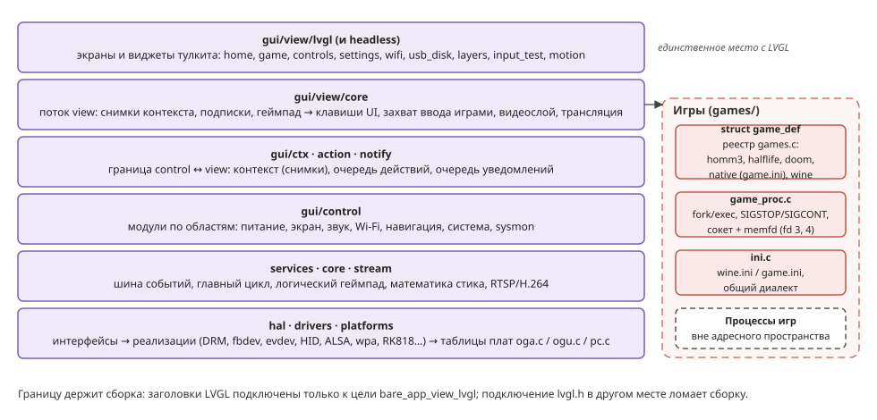
Границу с тулкитом держит сборка: путь к заголовкам LVGL подключён только к цели
bare_app_view_lvgl; бэкенд headless собирается вообще без тулкита и служит
проверкой. Платформа (src/platforms/oga.c, ogu.c, pc.c) выбирается во время
работы по compatible device tree, так что одна сборка может нести обе приставки.
Потоки
| Поток | Владеет | Ждёт |
|---|---|---|
| control (main) | сервисы, шина, control-модули, запись в контекст | signalfd, очередь шины, очередь действий, таймеры |
| view | LVGL, драйверы экрана и ввода, видеослой | eventfd контекста, очередь notify, evdev, DRM, ящик кадров |
| звук интерфейса | PCM, пока звучит | очередь запросов |
| сеть трансляции | RTSP-сервер, кодер, зрители | сокеты, ящик кадров, RTCP |
| звук трансляции | захват loopback и вывод на устройство | PCM по 10 мс |
| процесс игры | движок, буфер в общей памяти | свой цикл |
Между потоками пять общих объектов: контекст gui_ctx (view читает только
снимки), очередь действий view → control, очередь уведомлений control → view,
шина событий сервисы → control, ящик кадров источник → view. Сигналы
принимаются через signalfd в control.
Главный экран
Как у Switch: ряд крупных квадратных плиток — 10 игр по порядку последних запусков, последняя плитка «Все игры» открывает библиотеку (сетка 5 в ряд на GO Ultra, вертикальная прокрутка). Над рядом — название выбранной игры, под ним — круглые кнопки экранов (тест ввода, USB-диск, файлы, настройки, слои или стенд-тест), внизу — что сделают X и A. Сверху: часы (если выставлены), USB, громкость, Wi-Fi, батарея с процентом (жёлтая с 20 %, красные цифры с 10 %, зелёная с молнией на зарядке). Значки — на равных расстояниях; громкость — динамик с обеими волнами всегда во всю ширину (волны по уровню белые, остальное тусклое, без звука — перечёркнут), так что смена уровня ничего не сдвигает.
 Главный экран: ряд плиток по последним запускам, круглые кнопки экранов, подсказка кнопок внизу.
Главный экран: ряд плиток по последним запускам, круглые кнопки экранов, подсказка кнопок внизу.
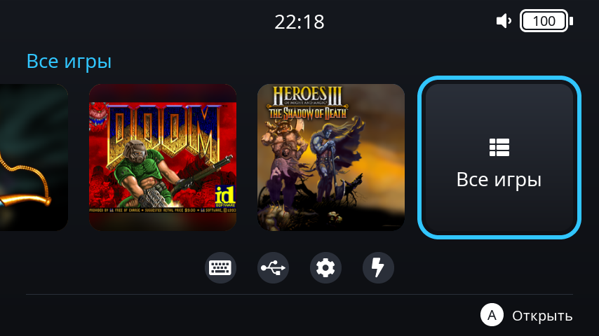
Конец ряда — плитка «Все игры»…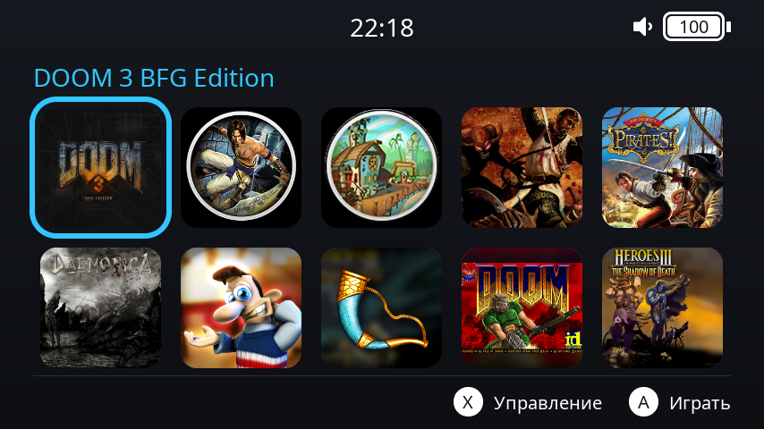
…и библиотека: все игры сеткой 5 в ряд с вертикальной прокруткой.- Плитка показывает
cover.pngиз каталога игры (квадрат любого размера, обрезается по плитке 210×210 на GO Ultra, 140×140 на OGA); без обложки — название на цветном фоне, свёрнутая — со значком паузы. - Только то, что есть на карте: игры без нужных файлов (
missing()) в меню не показываются. Пока открыт главный экран или библиотека, bare_app раз в 2 секунды сверяет каталоги, откуда берутся игры (watch()каждого типа игры: смонтирован ли, та же ли ФС, те же ли имена), и при изменении строит экран заново: вставили или вынули карту, скопировали игру — меню это покажет. Описания игр (wine.ini,game.ini) лежат на карте, так что для нового списка игр rootfs не нужен. - A запускает, X открывает «Управление игры», B в библиотеке возвращает на главный.
- Порядок хранится в файле настроек (
recent=до 16 ключей игр). Ключ игры — 8 hex-цифр от её id и имени каталога, поэтому переименование каталога игры теряет её порядок и настройки управления.
Экран «Управление игры»
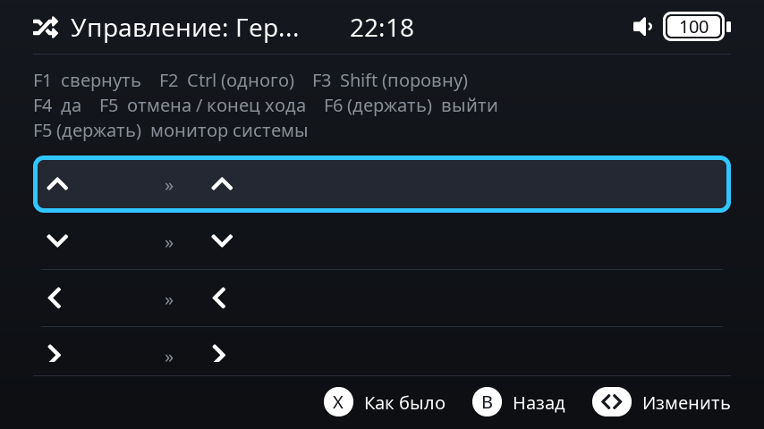
X на плитке Героев III: сверху подсказка игры, ниже строка на каждую кнопку и во что она превращается.Строка на каждую кнопку устройства, которую получает игра, справа — какой кнопкой
она будет для игры; слева/справа перебирают, X возвращает, последняя строка —
всё как было. Сверху — подсказка игры (hint), в строках — что кнопка делает в
игре ([labels] / [labels.ru] из ini; у Doom и Героев III — по их раскладке, у
Героев своя для GO Advance и GO Ultra; у Half-Life — что привязано к кнопке в
config.cfg игры, label() в game_def получает платформу). Ниже — инверсия осей стиков, а с
датчиком движения — «Прицел гироскопом» и чувствительность. Хранится по игре:
controls.<ключ>=a=b,x=-,ly=invert,gyro=on. Кнопки, которые bare_app оставляет
себе (питание, громкость, F6, кнопка сворачивания, L2/R2 там, где они —
громкость), в списке нет. Изменения действуют со следующего нажатия, даже в
свёрнутой игре.
Файловый менеджер
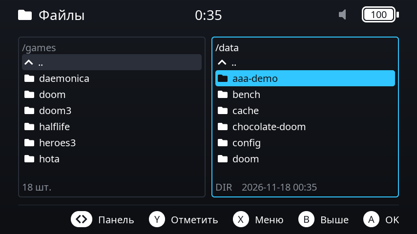
Две панели: слева/games, справа /data; горит панель с курсором, внизу — размер и время или сколько отмечено.
Круглая кнопка с папкой (SCREEN_FILES): две панели, как в Midnight Commander.
Вверх/вниз — курсор (L1/R1 — страница), влево/вправо — другая панель, A — войти в
каталог или открыть файл в редакторе, B — каталог выше (в / — закрыть), Y —
отметить, X — меню.
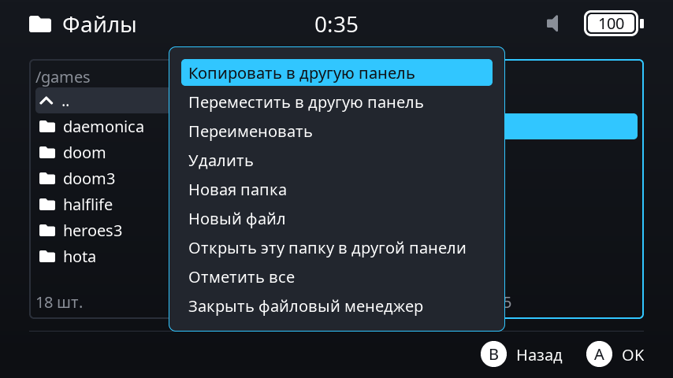
X: копировать или перенести в другую панель, переименовать, удалить, новая папка и файл, отметить все.Копирование, перенос и удаление берут отмеченные записи (или ту, что под курсором),
спрашивают перед удалением и перед заменой того, что уже есть. Их выполняет control
(ctl_files, services/files.c) в отдельном потоке; окно показывает ход, B
отменяет. Панели рисуют только видимые строки и перечитывают каталог, когда он
меняется. На /games (смонтирован только для чтения) запись не пройдёт — экран так и
скажет; для записи: mount -o remount,rw /games.
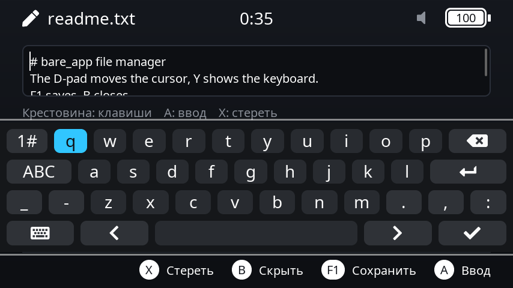
Редактор: Y — экранная клавиатура (крестовина ходит по клавишам, A печатает, X стирает), F1 сохраняет.Редактор — для текстов до 128 КБ: крестовина двигает курсор, A — перевод строки, X стирает, Y — экранная клавиатура, F1 сохраняет (новый файл рядом и переименование поверх старого), B закрывает и спросит про несохранённое. USB-клавиатура печатает и в редакторе, и в именах (раскладка US, Ctrl+S, Esc, Home/End, PgUp/PgDn).
Игры как отдельные процессы
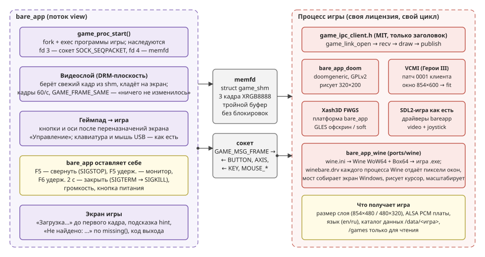
Каждая игра — программа, которую bare_app запускает на сеанс
(src/games/game_proc.c): fork + exec с двумя унаследованными дескрипторами.
- fd 3 — сокет
SOCK_SEQPACKET, по пакетуstruct game_msg: игра → приложениеGAME_MSG_FRAME(с флагомGAME_FRAME_SAME, если кадр не изменился: так неподвижная картинка не принимается за зависание); приложение → играGAME_MSG_BUTTON,GAME_MSG_AXIS, а играм с клавиатурой и мышью USB —GAME_MSG_KEY,GAME_MSG_MOUSE_*. EOF — другая сторона умерла. - fd 4 — memfd:
struct game_shmи три кадра XRGB8888 размером с видеослой. Тройной буфер без блокировок: у каждого по буферу, третий «в середине»; игра, упавшая посреди кадра, не блокирует приложение. Для трансляции игра может отдавать ещё и «свою картинку» большего размера (VCMI 854×600 → поток).
Протокол — src/games/game_ipc.h, сторона игры — game_ipc_client.h, оба под
MIT, чтобы включаться в игры с любой лицензией; Buildroot кладёт их в
staging/usr/include/bare_app/. Кадр уже должен быть размера слоя:
масштабирует игра (или драйвер SDL2 / мост Wine).
Что получает процесс игры: размер слоя (854×480 на GO Ultra, 480×320 на OGA),
ALSA-устройство платы (при включённой трансляции — сторона loopback), язык
(en/ru), каталог данных. Вывод игры попадает в /var/log/bare_app.log.
Жизненный цикл
| Событие | Что делает bare_app |
|---|---|
| запуск | экран «Загрузка…» до первого кадра, потом подсказка hint на пару секунд |
| F5 (у Героев на GO Ultra — F1) | сворачивает: процессу SIGSTOP, в меню значок паузы; та же кнопка или плитка разворачивают с того же места |
| F5 удерживать 0,6 с | монитор системы поверх игры (CPU по кластерам, GPU, память, температуры, батарея, диски, FPS и график времени кадра) |
| F6 удерживать 2 с | SIGTERM (SDL превращает в SDL_QUIT), через секунду SIGKILL, назад в меню |
| L2/R2 | громкость у игр с trigger_volume / volume = triggers, иначе уходят в игру |
| выход с кодом 0 | экран закрывается; другой код или сигнал — экран показывает причину |
| пункт другой игры при свёрнутой | вопрос: закрыть свёрнутую или отменить |
| заряд ≤ 15 % без зарядки | красное предупреждение на 6 с, с 5 % — батарея в углу |
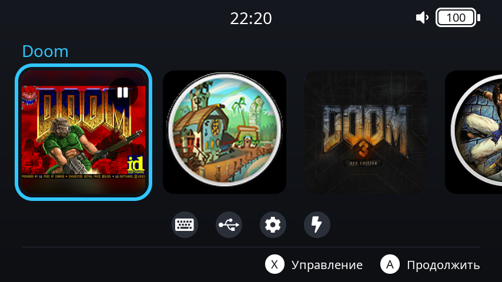
Doom свёрнут по F5: процесс остановлен, на плитке значок паузы, A продолжает с того же места.Реестр игр
Меню, экран игры и ядро view знают игры только через таблицу games[] в
src/games/games.c — по одному struct game_def на тип игры
(homm3.c, halflife.c, doom.c, native.c, wine.c; bench.c — стенд-тест
отдельной круглой кнопкой). Поля: id, title, hint, missing() (что не
найдено), start() (запуск), entries()/info() для игр, найденных во время
работы (каждый wine.ini и game.ini — отдельный пункт), watch() (каталоги,
изменение которых меняет меню), label() для экрана управления, trigger_volume,
gyro_on, hint_for()/minimize_for() по платформе. switch по играм в коде нет.
Состав сборки (Kconfig)
Что входит в бинарник — платформы, драйверы, экраны, шрифты, языки, игры —
задаёт собственный Kconfig (Kconfiglib в tools/kconfig): configs/pc_defconfig
(симулятор SDL, тесты), oga_defconfig, ogu_defconfig, oga_minimal_defconfig.
В образе символы игр ставит пакет bare-app из APPS_CONFIG
(CONFIG_GAME_HOMM3=$(…BR2_PACKAGE_BARE_APP_HOMM3) и т. д.), так что игра
включается в одном месте — конфиге прошивки.
cmake -S . -B build-host && cmake --build build-host -j && (cd build-host && ctest)
./build-host/bare_app # симулятор в окне SDL
echo "down a wait:500 f6" | BARE_APP_SHOT=s.ppm ./build-host/bare_app -p pc-mem # сценарий + снимок
BARE_APP_SIZE=854x480 ./build-host/bare_app -p pc-mem # экран GO Ultra
Остальные экраны и сервисы
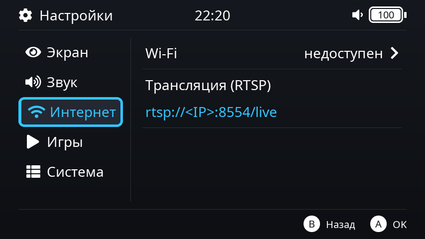
Настройки, категория «Интернет»: Wi-Fi (на GO Ultra — через USB-адаптер) и адрес RTSP-трансляции.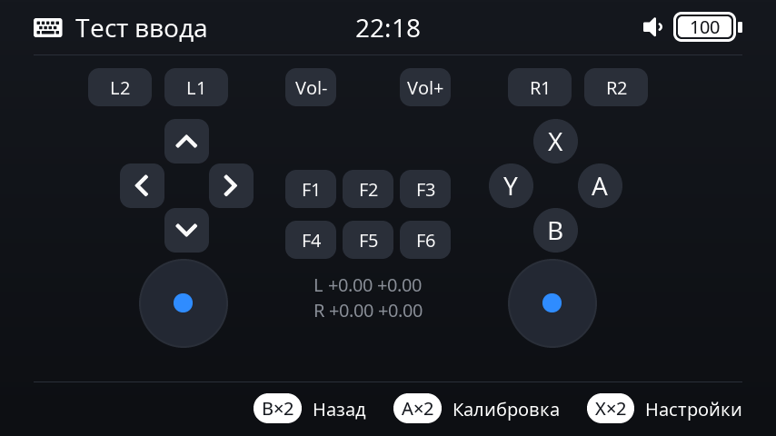
Тест ввода: только те кнопки и оси, которые объявили драйверы платы; A×2 — калибровка стиков.- Настройки: язык (en/ru), яркость, громкость, Wi-Fi (список сетей, ввод ключа
lv_keyboard), интернет (RTSP-трансляция), система (гибернация, дата и время), датчик движения. - Трансляция (RTSP) — свой сервер без сторонних библиотек: H.264 (аппаратный
кодер через V4L2 —
meson-vencна GO Ultra,rk-vepu-h264на OGA, иначе OpenH264), звук L16 через ALSA loopback, MPEG-TS для VLC без live555.rtsp://<адрес>:8554/live. - Монитор системы —
services/sysmon.c, читает/procи/sys, всегда по-английски. - Снимок экрана —
kill -USR1→ слои дисплея в PPM (BARE_APP_SHOT),ogu-ctl.py shot:/oga.sh shot. - Клавиатура и мышь USB — захватываются (
input_hid), в меню работают как кнопки, в Windows-игры и SDL-игры идут как есть. - Датчик движения (ICM-20948 на USB) — гироскоп как мышь: по умолчанию включён у Doom, Half-Life, DOOM 3, RTCW, выключен у игр с курсором.
Подробности до уровня файлов — ARCHITECTURE.md; кнопки каждой игры — README.md.